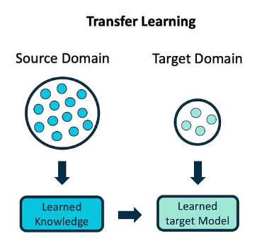
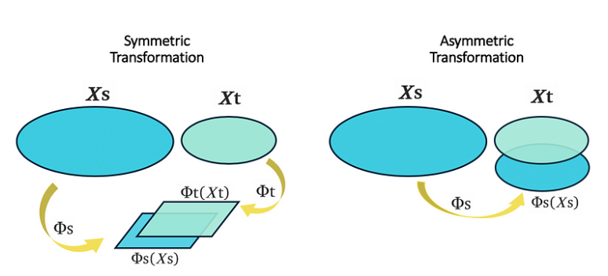

Instance-Based Transfer Learning#
Instance-based transfer learning utilizes labeled data from a source domain to improve learning in a target domain. When the source and target domains are similar, integrating source domain data can simplify the problem to a standard single-domain task. However, this approach often struggles when the domains are significantly different.
Mathematical Motivation:
Instance-based transfer learning focuses on selecting and using relevant source domain instances to enhance target domain learning. The process involves addressing two primary issues:
Selecting Relevant Instances:
Objective: Identify which source domain instances are most similar to those in the target domain to reduce model variance and bias. When the target domain dataset is limited, integrating source domain data can help mitigate high variance. Nonetheless, substantial differences between the domains might introduce bias.
Utilizing Selected Instances:
Objective: Incorporate the selected source domain instances into learning algorithms to improve the accuracy of the target domain model.
Mathematical Formulation:
Given:
Domain \( D = \{X, P_X\} \): Feature space \( X \) and marginal distribution \( P_X \).
Task \( T = \{Y, P_{Y|X}\} \): Label space \( Y \) and conditional probability distribution \( P_{Y|X} \).
When \( D_s = \{X_s, P_{X_s}\} \) and \( D_t = \{X_t, P_{X_t}\} \), and \( T_s = \{Y_s, P_{Y_s|X_s}\} \) and \( T_t = \{Y_t, P_{Y_t|X_t}\} \):
Noninductive Transfer Learning: Occurs when \( P_{X_s} \neq P_{X_t} \) but \( P_{Y_s|X_s} = P_{Y_t|X_t} \). The problem is when the marginal distributions differ but the conditional probabilities are the same. For example, different hospitals (domains) have different patient populations (marginal distributions), but the disease causes (conditional probabilities) are the same.
Inductive Transfer Learning: Occurs when \( P_{Y_s|X_s} \neq P_{Y_t|X_t} \). Here, both marginal distributions and conditional probabilities differ. For example, different subtypes of a virus (tasks) have different causes (conditional probabilities).
Instance-Based Noninductive Transfer Learning#
\(X_s = X_t\), \(P_{X_s} \neq P_{X_t}\). To learn a predictive model for the target domain \(D_t\), we aim to find the optimal parameter vector \(\theta_t\) by minimizing the risk function. This involves solving:
where \(l(x, y, \theta_t)\) is a loss function depending on \(\theta_t\). However, since there are no labeled target domain data, this direct optimization is not feasible.
Reformulation Using Source Domain Data#
Using Bayes’ rule and the definition of expectation, the optimization problem can be reformulated.
If \(P_{Y_s|X_s}=P_{Y_t|X_t}\) and becuase \(P_{X,Y} = P_{Y|X} P_X\), we have:
Therefore:
Empirical Approximation#
To practically estimate \(\theta_t^*\) using source domain data \(\{(x_{si}, y_{si})\}_{i=1}^{n_s}\), we need to estimate the density ratio \(\beta(x) = \frac{P_t(x)}{P_s(x)}\). The empirical approximation is:
where \(\beta(x_{si})\) is the weight for the source domain instance \(x_{si}\).
Density Ratio Estimation#
Estimating \(\beta(x_{si})\) involves:
Estimating \(P_t(x)\) and \(P_s(x)\) from the available data.
Computing the ratio \(\frac{P_t(x_{si})}{P_s(x_{si})}\) for each source domain instance \(x_{si}\).
This step can be challenging, especially with high-dimensional data, where density estimation errors affect the ratio estimation.
Homework: Density ratio estimation#
Classification
Regression
Kernel Mean Matching (KMM): Mathematical Framework#
Kernel Mean Matching (KMM) is an effective technique for estimating the density ratio between source and target domains using kernel methods. The approach leverages kernel embedding of distributions and aims to align the mean of the source domain data with that of the target domain data in a Reproducing Kernel Hilbert Space (RKHS).
Basic Idea#
The goal of KMM is to estimate the density ratio \( \frac{P_t(x)}{P_s(x)} \) by aligning the mean of source domain instances with the mean of target domain instances in an RKHS.
Notations and Definitions#
Density Ratio: For each source domain instance \( x_i^s \), denote \( \beta_i = \frac{P_t(x_i^s)}{P_s(x_i^s)} \). Define \( \beta \) as:
where \( n_s \) is the size of the source domain dataset.
RKHS Transformation: Map each data instance \( x \) to a feature space using a kernel function, transforming it to \( \Phi(x) \) in the RKHS \( \mathcal{F} \).
Mean in RKHS: Define \( \mu(P_t) \) as the mean of the target domain instances in the RKHS:
Optimization Problem#
The KMM method aims to find weights \( \beta \) such that the mean of the weighted source domain instances matches the mean of the target domain instances in the RKHS. The optimization problem is formulated as:
subject to: $\( \beta(x) \geq 0, \quad \mathbb{E}_{P_s}[\beta(x)] = 1 \)$
where:
\( \Phi(x) \) is the feature representation of \( x \) in the RKHS.
\( \mathbb{E}_{P_s}[\cdot] \) denotes the expectation over the source domain distribution.
Empirical Objective Function#
In practice, the objective is optimized based on empirical data. The empirical version of the objective function is:
subject to: $\( \beta_i \geq 0, \quad \frac{1}{n_s} \sum_{i=1}^{n_s} \beta_i = 1 \)$
where:
\( x_i^s \) are source domain instances.
\( x_i^t \) are target domain instances.
\( n_t \) is the number of target domain instances.
To solve the optimization problem:
subject to: $\( \beta_i \geq 0, \quad \frac{1}{n_s} \sum_{i=1}^{n_s} \beta_i = 1, \)$
Soloution: we can proceed with the following steps:
Reformulate the Objective Function#
Let’s denote the average of the source and target feature mappings as:
The objective function becomes:
Step 2: Expand the Objective Function#
We can expand the squared norm:
Expanding the product:
Express in Terms of Kernel Functions#
We can rewrite the inner products using the kernel function \( k(x, y) = \langle \Phi(x), \Phi(y) \rangle \):
The term \( \langle \Phi(x_i^s), \Phi(x_j^s) \rangle \) becomes \( k(x_i^s, x_j^s) \).
The term \( \langle \Phi(x_i^s), \mu_t \rangle \) becomes \( \frac{1}{n_t} \sum_{j=1}^{n_t} k(x_i^s, x_j^t) \).
So, the objective function can be rewritten as:
The constant term \( \|\mu_t\|^2 \) does not depend on \( \beta \), so we can ignore it for optimization purposes. The above problem is a quadratic programming problem with a linear equality constraint.
Incorporating Weights into Model Training#
Once the optimal weights \( \beta \) are computed, they can be used to reweight the source domain data in the loss function for training the predictive model \( \theta_t^* \). The model is learned by minimizing the weighted empirical risk:
Function Approximation for Density Ratio Estimation#
Function approximation methods for estimating the density ratio focus on representing the ratio \( \frac{P_t(x)}{P_s(x)} \) as a function \( \beta(x) \), which is then approximated by a combination of base functions.
Approximation Framework#
Density Ratio Function Define the density ratio \( \frac{P_t(x)}{P_s(x)} \) as a function \( \beta(x) \). Assume \( \beta(x) \) can be represented as a linear combination of base functions:
where:
\( \alpha = (\alpha_1, \alpha_2, \ldots, \alpha_b)^T \) are the coefficients to be learned.
\( \phi_l(x) \) are the base functions, which can be linear or nonlinear.
Approximating \( P_t(x) \): Using the approximated density ratio \( \beta(x) \), the target domain density \( P_t(x) \) can be approximated as:
Learning Coefficients#
To learn the coefficients \( \alpha \), minimize the discrepancy between the true density ratio \( \beta(x) \) and the approximated ratio \( \hat{\beta}(x) \). Different loss functions can be employed for this purpose:
Kullback-Leibler (KL) Divergence#
The KL divergence between the true target density \( P_t(x) \) and the approximated density \( \hat{P}_t(x) = \beta(x) P_s(x) \) is:
Substituting \( \hat{P}_t(x) = \beta(x) P_s(x) \), we get:
Empirically, minimizing the KL divergence can be approximated by solving:
subject to:
Squared Loss#
An alternative loss function is the squared loss, which measures the discrepancy between the true density ratio \( \beta(x) \) and the approximated ratio \( \hat{\beta}(x) \):
Here, \( \hat{\beta}(x) \) is approximated by:
Instance-Based Inductive Transfer Learning#
Instance-based inductive transfer learning is a technique where the source and target tasks may differ in their conditional probabilities, \(P_{Y_s|X_s} \neq P_{Y_t|X_t}\). This difference poses challenges in adapting the model from the source domain to the target domain, especially when there is limited labeled data in the target domain. To address this, instance-based inductive transfer learning typically requires both source domain-labeled data \( D_s = \{ (x_i^s, y_i^s) \}_{i=1}^{n_s} \) and a small set of target domain-labeled data \( D_t = \{ (x_i^t, y_i^t) \}_{i=1}^{n_t} \).

Integration of Source and Target Loss#
A common approach involves decomposing the loss function into two parts: one for the source domain and one for the target domain. A trade-off parameter is introduced to balance the contributions of these losses.
K-Nearest Neighbors (KNN) Method
The KNN classifier identifies the \( K_s \) nearest source domain instances and \( K_t \) nearest target domain instances for each test instance \( x_i^t \). The overall vote for a class label \( y \) is computed as:
where:
\( V_t(y) \) and \( V_s(y) \) are the counts of votes from the target and source domains, respectively.
\( \theta \) is a trade-off parameter balancing the influence of the source and target domain neighbors.
Support Vector Machines (SVM) Method
Simple form type of SVM is: $\( Rreg[f] := Remp[f] + λ \|α\|1 \)$
where \( \|α\|1 \) denotes the \(l_1\) norm in the coefficient space. Thus, we use the Support Vector (SV) kernel expansion:
where capacity is controlled differently by minimizing:
For the \( \epsilon\)-insensitive loss function, this leads to a linear programming problem:
Subject to:
The objective function of SVMs is modified to account for both source and target domain data: $\( \min_{\alpha_s, \alpha_t} \left( \sum_{j=1}^{n_s} \alpha_j^s + \sum_{j=1}^{n_t} \alpha_j^t \right) + C_s \sum_{j=1}^{n_s} \xi_j^s + C_t \sum_{j=1}^{n_t} \xi_j^t \)$
subject to:
where \( \alpha_j^s \) and \( \alpha_j^t \) are the model parameters for source and target domains, and \( \xi_j^s \) and \( \xi_j^t \) are slack variables.
Semi-Supervised Framework
Semi-supervised framework utiliz both labeled and unlabeled target domain data. Parameters \( \alpha_i \) and \( \beta_i \) measure differences between the source and target domains, and \( \gamma_i(y) \) approximates the probability of true label of \( x_i^{t,u} \) is y. The optimization problem is:
where \( \lambda_s \), \( \lambda_{t,l} \), and \( \lambda_{t,u} \) are regularization parameters, and \( P(\theta) \) is a prior for the parameters \( \theta \).
Feature-Based Transfer Learning#
In many real-world scenarios, the assumption that the source and target domain data have similar may not hold. Feature-based transfer learning provides “feature space” rather than the raw input space.
The core idea is to learn a pair of mapping functions, \(\{\phi_s(\cdot), \phi_t(\cdot)\}\), that map data from the source domain \(\mathcal{D}_s\) and the target domain \(\mathcal{D}_t\) into a common feature space \(\mathcal{Z}\). This reduces the discrepancy between the domains, allowing for better transfer of knowledge.
Let \(\mathcal{X}_s\) and \(\mathcal{X}_t\) represent the feature spaces of the source and target domains, respectively. In homogeneous transfer learning, we assume that there is some overlap between \(\mathcal{X}_s\) and \(\mathcal{X}_t\), denoted by \(\mathcal{X}_s \cap \mathcal{X}_t \neq \emptyset\), and that the label spaces are the same, i.e., \(\mathcal{Y}_s = \mathcal{Y}_t\).
Once the mapping functions \(\phi_s\) and \(\phi_t\) are learned, the data from both domains are mapped into the common feature space:
A target classifier \(h: \mathcal{Z} \to \mathcal{Y}_t\) is then trained on this new feature space using the mapped data \(\mathcal{Z}_s\) and \(\mathcal{Z}_t\). For unseen data in the target domain, the data is first mapped to the common feature space \(\mathcal{Z}_t\), and the trained classifier \(h\) is used to make predictions.

Maximum Mean Discrepancy (MMD)#
Minimizing domain discrepancy in transfer learning involves identifying latent features that are consistent across domains. This allows for accurate model training in the target domain using source domain data. The Maximum Mean Discrepancy (MMD) metric measures the distance between domain distributions through kernel embedding in a reproducing kernel Hilbert space (RKHS). Formally, MMD between source \( X_s \) and target \( X_t \) domain samples is given by:
where \(\phi(x)\) maps instances to RKHS.
We explain why the Maximum Mean Discrepancy (MMD) is defined as shown above.
Lemma:
Discussion:
Definitions and Notation#
Hilbert Space \(H\): A Hilbert space is a complete inner product space. The norm \(\|f\|_H\) of a function \(f\) in this space is defined by \(\|f\|_H = \sqrt{\langle f, f \rangle_H}\).
Mean Embeddings: \(\mu_p\) and \(\mu_q\) are the mean embeddings of distributions \(p\) and \(q\) in the Hilbert space \(H\). Specifically, \(\mu_p\) and \(\mu_q\) are the expectations of the functions with respect to \(p\) and \(q\), respectively.
Supremum: \(\sup_{\|f\|_H \leq 1} \langle \mu_p - \mu_q, f \rangle_H\) is the supremum (or maximum) of the inner product \(\langle \mu_p - \mu_q, f \rangle_H\) over all functions \(f\) in \(H\) with norm \(\|f\|_H \leq 1\).
Why the Equality Holds#
Inner Product and Norm Relationship: By definition, the norm of a vector \(\mu_p - \mu_q\) in the Hilbert space \(H\) is given by \(\|\mu_p - \mu_q\|_H = \sqrt{\langle \mu_p - \mu_q, \mu_p - \mu_q \rangle_H}\).
Supremum Value: To find the supremum of \(\langle \mu_p - \mu_q, f \rangle_H\) subject to \(\|f\|_H \leq 1\), note that:
The supremum is maximized when \(f\) is chosen to be in the direction of \(\mu_p - \mu_q\).
Specifically, if \(f = \frac{\mu_p - \mu_q}{\|\mu_p - \mu_q\|_H}\), then \(\|f\|_H = 1\) and
Therefore,
Square of the Supremum: Squaring the supremum gives
\( \square\)
MMD in RKHS#
Express the squared norm using inner products:
Using the properties of the norm in Hilbert space, the squared norm can be expanded as:
Expanding this, we get:
Relate to expectations:
Let \(\langle \phi(x), \phi(x') \rangle_H = k(x, x')\) be the inner product in the feature space \(H\), where \(k\) is the kernel function. Substituting the empirical estimates of the feature space means, \(\mu_X\) and \(\mu_Y\), based on the respective samples \(X\) and \(Y\), we have:
The empirical estimate of the Maximum Mean Discrepancy (MMD) is:
Homework you can proof following,#
where \( K \) is a composite kernel matrix and \( L \) defines the weights. where \( K \) is a composite kernel matrix defined as:
Here, \( K_{s,s} \), \( K_{t,t} \), and \( K_{s,t} \) represent the kernel matrices for the source domain, target domain, and the cross-domain interactions, respectively. The matrix \( L \) has entries \( l_{ij} \) defined as:
The MMD embedding (MMDE)#
The MMD embedding (MMDE) approach optimizes the following objective:
subject to constraints on \( \phi(X_s) \) and \( \phi(X_t) \). The optimization problem is reformulated as:
subject to the constraints:
\( K_{ii} + K_{jj} - 2K_{ij} = d_{ij}^2 \)
\( K1 = 0 \)
Where:
\( K_{ii} \) and \( K_{jj} \) are the diagonal elements of the kernel matrices for the source and target domains, respectively.
\( K_{ij} \) is the cross-domain kernel matrix.
\( d_{ij} \) represents the pairwise distance between instances in the source and target domains.
\( K_1 = 0 \) ensures that the kernel matrix is centered.
Miniprojects:#
Transfer Component Analysis
Deep Architectures with MMD
Learning Universal Features Also other subjects from “Transfer Learning” by Q.YANG, Y. ZHANG, W. DAI, S. J. PAN.